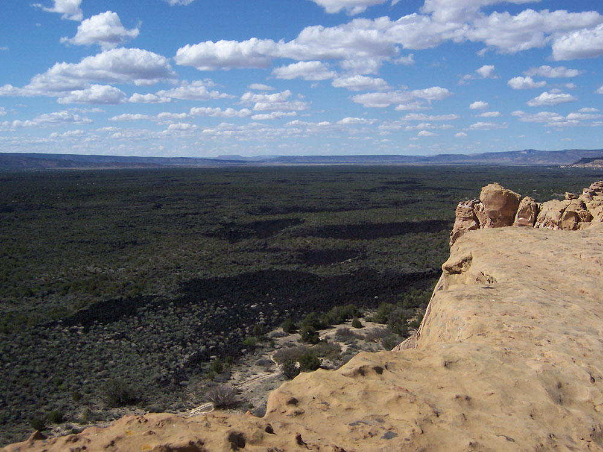
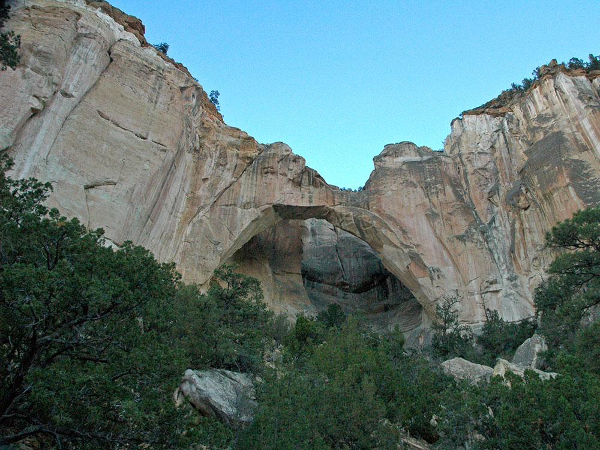
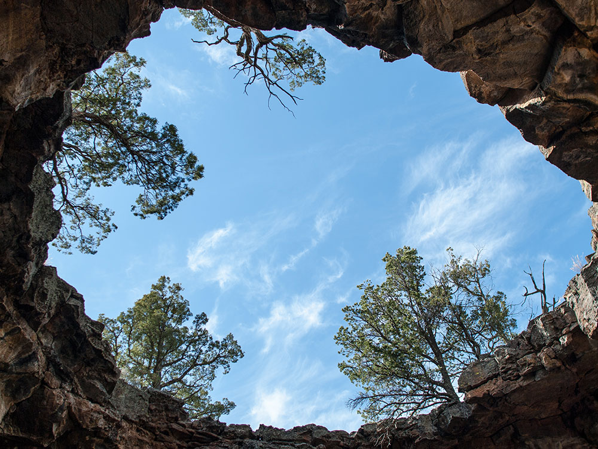
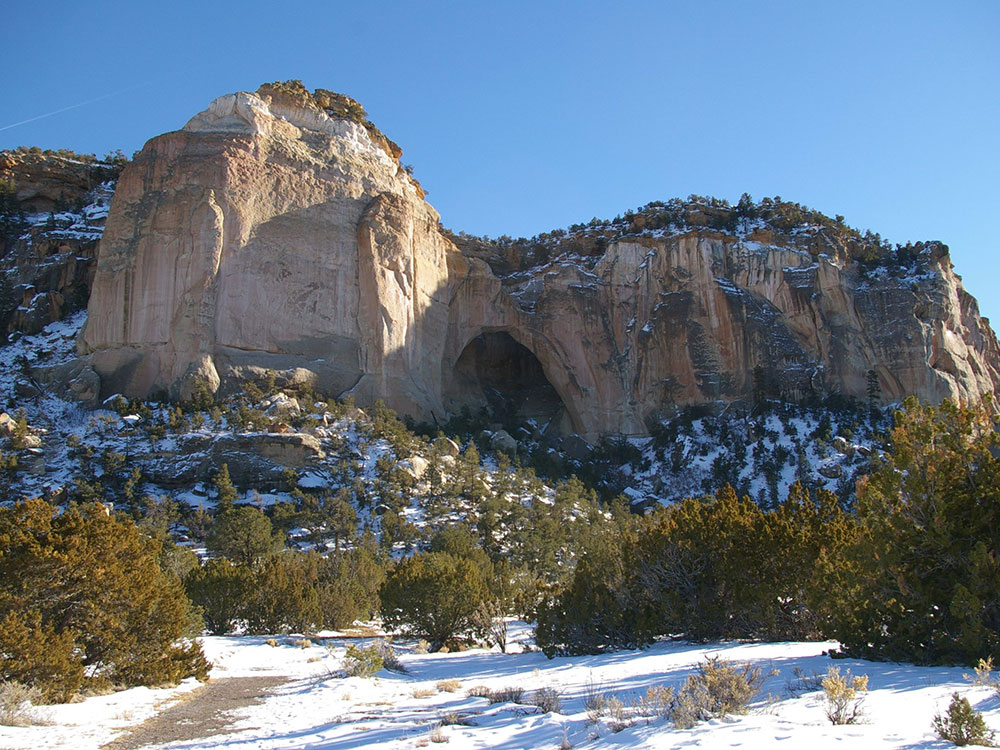
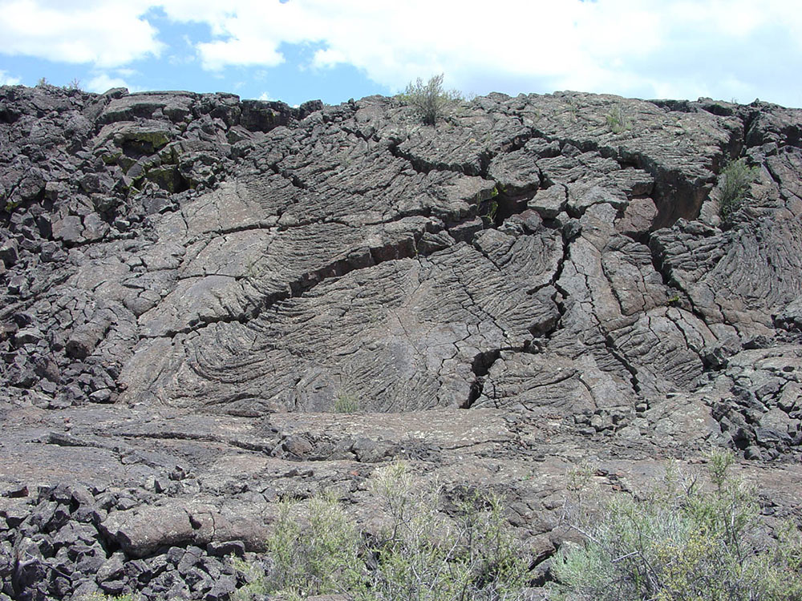

_1_(29403918734).jpg){kind=link}
Monument located in western New Mexico, named from the Spanish term Malpaís, meaning badlands, due to the extremely barren and dramatic volcanic field that covers much of the park's area
General Information
Visitor Center: 9am to 5pm
Closed Thanksgiving Day, Christmas Day, and New Year’s Day
How to Get There
From Grants (1 mi): Take Santa Fe Ave east from downtown Grants, then follow signs to the El Malpais Visitor Center located just off I-40 Exit 85.
Overview
El Malpais National Monument protects a rugged landscape of lava flows, cinder cones, lava tubes and sandstone bluffs in west-central New Mexico, part of the Zuni-Bandera volcanic field. "El Malpais" is Spanish for "the badlands," and the black basalt flows include some of the youngest lava in the continental United States, with eruptions as recent as a few thousand years ago. The monument was established in 1987 to protect the volcanic features, caves and the archaeological and cultural sites of the Acoma, Zuni and other peoples, and it sits beside the BLM's El Malpais National Conservation Area. Visitors come to explore lava tube caves, hike across ancient lava, see La Ventana Arch and Sandstone Bluffs and enjoy dark skies and solitude.
Access
The monument is near the town of Grants in Cibola County, about 80 miles west of Albuquerque via I-40. Most visitors start at the visitor center off I-40 exit 85, then drive NM-53 or NM-117 to reach different areas. NM-117 on the east side leads to Sandstone Bluffs, La Ventana Arch and the Lava Falls area, while NM-53 on the west side leads to the El Calderon area and Zuni-Acoma trailheads. Most main roads are paved, but some access roads are gravel and can become impassable when wet, and the cave areas involve rough walking over lava.
Seasons
The monument is open year-round, with spring and fall the most comfortable seasons for hiking across the lava. Summer days can be hot on the black rock and afternoon thunderstorms are common, while winters are cold, with snow and ice that can close roads and some trails. Caves require permits and some are closed seasonally to protect bats and other wildlife, and the Giant Ice Cave area is especially sensitive. Always bring more water than you expect to need, since there is little shade or water on the trails.
Things to Do
Explore a Volcanic Landscape of Lava and Caves
El Malpais National Monument is a rugged volcanic landscape of jagged lava flows, collapsed tubes and cinder cones. Its mix of volcanic features and sandstone cliffs gives the monument a very different feel from the typical desert Southwest.
Explore the Lava Tube Caves
El Malpais has some of the best lava tube caves in the country. Visitors can explore Big Skylight Cave, Junction Cave and Xenolith Cave with a free permit from the visitor center, and headlamps and sturdy shoes are essential.
Walk Across the Lava Flows
Trails such as the Lava Falls Trail and the ancient Zuni-Acoma Trail cross rough basalt that was once molten rock. These hikes give a close look at the pahoehoe and a'a lava textures and at the plants that grow in the cracks.
See La Ventana Natural Arch and Sandstone Bluffs
La Ventana Arch is one of the largest natural arches in New Mexico and is a short walk from the highway. Sandstone Bluffs Overlook provides sweeping views over the lava field and distant mountains, especially at sunset.
Drive the Scenic Byways
NM-117 and NM-53 run along the edges of the monument and are part of the Trail of the Ancients region, offering pullouts and views without needing to hike far.
Top Trails
Lava Falls Trail
Length: Approximately 1 mile loop
Elevation Gain: Minimal
Difficulty: Moderate (rough lava surface)
This trail crosses a lava flow near the El Calderon area and is a good introduction to walking on volcanic rock. Cairns mark the route, and the uneven surface requires sturdy shoes.
La Ventana Natural Arch Trail
Length: Less than 0.5 miles round trip
Elevation Gain: Minimal
Difficulty: Easy
A short trail leads to the base of the arch in the sandstone cliffs. It is one of the most accessible and photogenic stops in the monument.
Zuni-Acoma Trail
Length: Approximately 7.5 miles one way
Elevation Gain: Moderate
Difficulty: Strenuous
This ancient trade route between the Zuni and Acoma Pueblos crosses four lava flows. It is a rugged, exposed hike with little shade or water and is best for prepared hikers who arrange a shuttle or hike a shorter out-and-back section.
Visitor Centers
The El Malpais Visitor Center, at the Northwest New Mexico Visitor Center near I-40 exit 85 in Grants, is the main stop. It has exhibits on the lava flows, volcanoes and cultural history, a film, maps, a bookstore and rangers who issue free cave permits and offer current road and trail conditions. On the western side, the El Malpais Information Center on NM-53 provides additional information and is open on a limited schedule. Check the National Park Service website for current hours and permit rules.
Camping and Lodging
The monument has no developed campground, though backcountry camping is allowed with a free permit. Nearby, the BLM's Joe Skeen Campground on NM-117 offers a small, primitive campground. Hotels, motels and restaurants, including several classic Route 66 properties, are in Grants just a few minutes from the visitor center. Gallup, about an hour west, and Albuquerque, about 1.5 hours east, offer additional lodging. Check each property's website for current availability.
The name El Malpais is from the Spanish term Malpaís, meaning badlands, due to the extremely barren and dramatic volcanic field that covers much of the park's area.
It is on the Trails of the Ancients Byway, one of the designated New Mexico Scenic Byways.
Geography and geology
The lava flows, cinder cones, and other volcanic features of El Malpais are part of the Zuni-Bandera volcanic field, the second largest volcanic field in the Basin and Range Province. This volcanically active area on the southeast margin of the Colorado Plateau is located on the ancient Jemez Lineament, which provides the crustal weakness that recent magmatic intrusions and Cenozoic volcanism are attributed to.
The rugged pāhoehoe and 'a'ā lava flows of the Zuni-Bandera eruptions (also called the Grants Lava Flows) filled a large basin, created by normal faulting associated with the Rio Grande Rift, between the high mesas of the Acoma Pueblo to the east, Mt. Taylor to the north, and the Zuni Mountain anticline to the northwest. Vents associated with these flows include Bandera Crater, El Calderon, and several other cinder cones; more than a dozen older cinder cones follow a roughly north-south distribution along the Chain of Craters west of the monument.
Features
El Malpais has many lava tubes open to explore. There are currently four caves accessible: Junction and Xenolith caves in the El Caldron area, and Big Skylight and Giant Ice caves in the Big Tubes area.
A nearby scenic overlook at Sandstone Bluffs offers spectacular panoramic views over the monument's lava flows.
This article uses material from the Wikipedia article "El Malpais National Monument", which is released under the Creative Commons Attribution-Share-Alike License 3.0 Additional information from the National Park Service.
Featured Trails
Image Placeholder
Lava Falls Trail
difficulty: Moderate
A short trail crossing rugged lava flows that highlights volcanic formations and unique terrain.
Image Placeholder
Big Tubes Trail
difficulty: Moderate
A hike leading to large collapsed lava tubes where visitors can explore volcanic cave features.
Image Placeholder
Sandstone Bluffs Trail
difficulty: Moderate
A scenic trail along cliff edges offering sweeping views of lava fields and surrounding desert.
Image Placeholder
La Ventana Trail
difficulty: Easy
A short walk leading to one of New Mexico’s largest natural arches set in sandstone cliffs.
Image Placeholder
Zuni-Acoma Trail
difficulty: Hard
A long historic route crossing remote lava fields that follows an ancient Native American trade path.


_3_(29403918364).jpg){kind=link}




